|
107国道长沙至郴州基本情况
杨飞，02
Apr 2011
2011年3月28日早上我从长沙骑自行车继续走107国道前往深圳，4月1日下午到达郴州，5天只走了350公里，比步行快不了多少。连续爆胎，我修车水平很烂，感觉崩溃，耽误了很多时间。
沿途修路地段很多，不少当地人在107国道骑电动车也戴着口罩。恐怖的大货车成群结队，灰尘漫天，特别是进入郴州煤矿区之后，灰尘都是黑色的，白色口罩都变成黑色的了，感觉类似自杀。回到长沙，我再也不抱怨任何道路多灰了，这城市多干净啊。
估计清明节会有人想起我，所以我回到长沙休息两天，节后继续上路。我打算郴州至广州继续骑单车，广州至深圳步行。整个行程预计在4月16日完成。
这一次我带着帐篷防潮垫和睡袋，第一天住在湘潭郊区一个村子被废弃的养老院，第二天住在衡阳郊区一个荒山小庙。一个人在这种鬼地方扎帐篷睡很需要点胆量。小庙的主持和尚聊了一会，他很担忧现在腐败的中国，说连基层的干部都烂透了，我开导这位僧人说，土地和这块土地上的人民都不会变，至于朝代，沉者自沉，浮者自浮，由他去吧。
一身臭汗还不能洗澡，挺难受。第三天我又开始住酒店。轮着来吧。
我在考虑尽快展开拍摄一次公路题材的纪录片，107国道是考虑之一（再走一次北京到香港）。如果走路的话，我需要招聘两位助手，预计为期三到四个月。若骑自行车的话，我需要三位助手（其中一位是司机），预计为期两到三个月。视频拍摄的文字计划正在草拟。本人现寻求与电视台或视频公司合作。您若有意请邮件联系我yangfei999999@hotmail.com或者电话13974850714找杨飞。
这几天拍照很多，每天三百张，大多数用altek806手机所拍，先传几张：
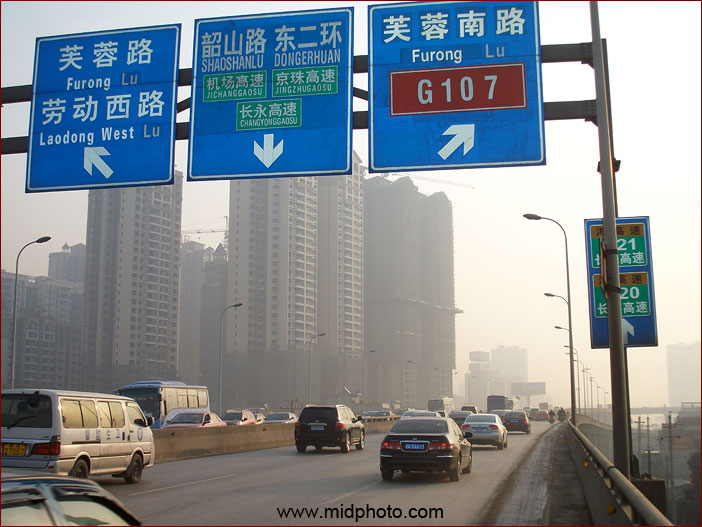
长沙二环南线。市区主干道芙蓉路是107国道的一段。
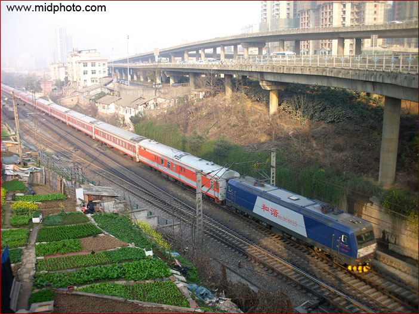
长沙二环南线高架桥下的京广铁路
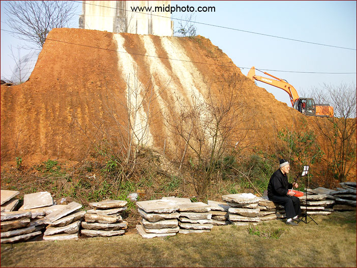
晨练京胡的老人。长沙
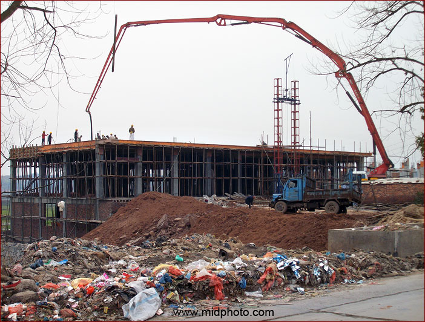
新建筑和垃圾遍地，107国道的典型风景。衡山。
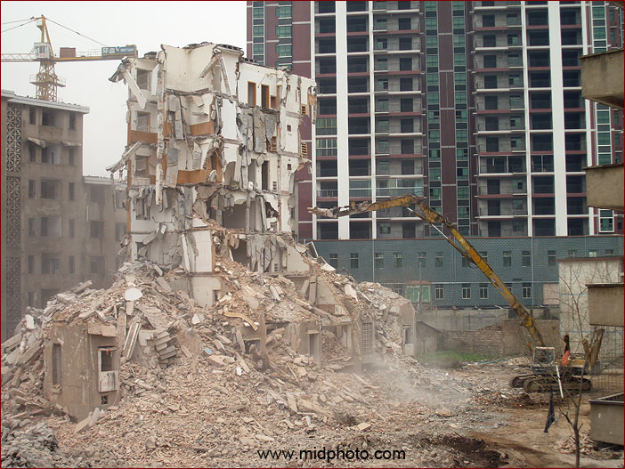
衡阳市
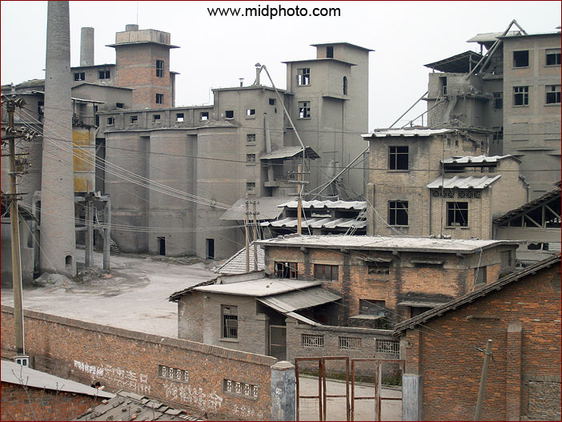
衡阳市郊
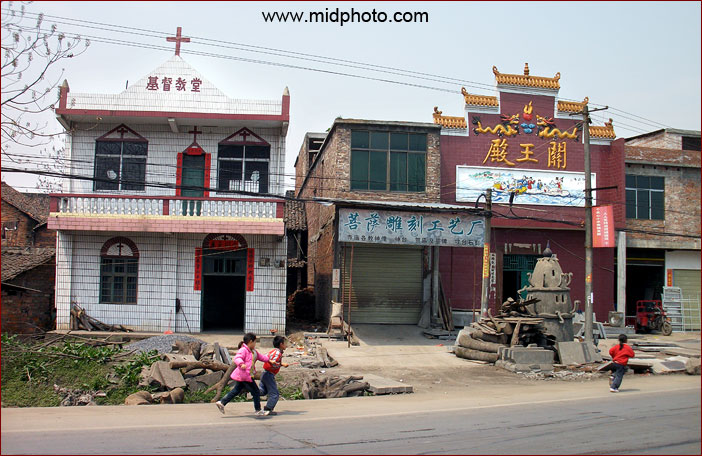
郴州段
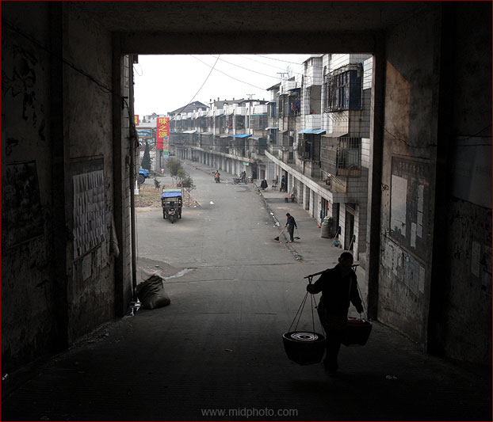
郴州永兴县马田镇
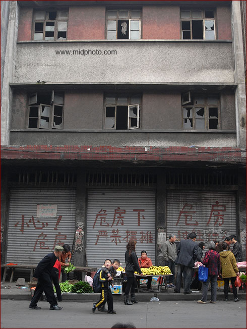
郴州永兴县马田镇
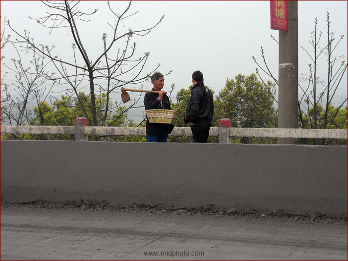
郴州永兴县马田镇
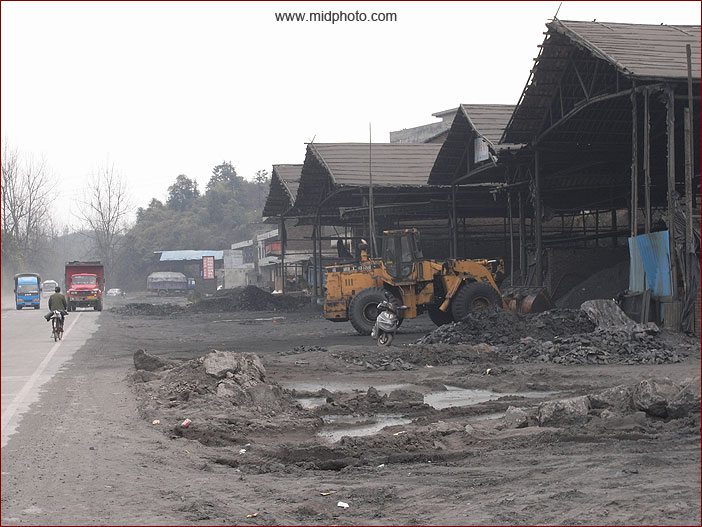
郴州段
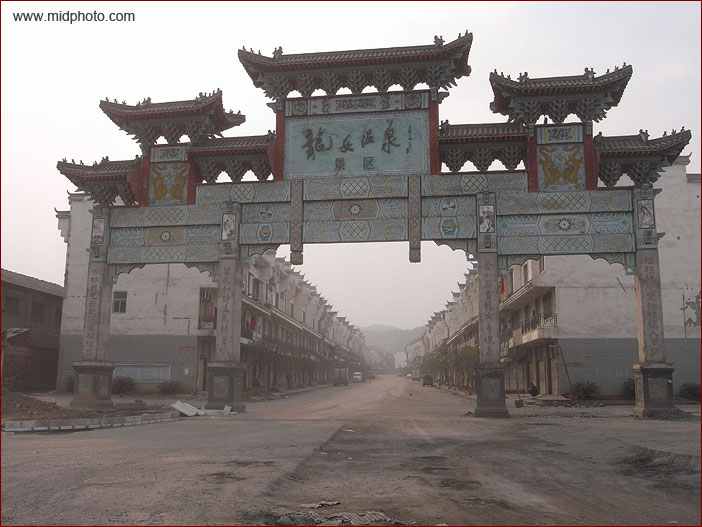
郴州市
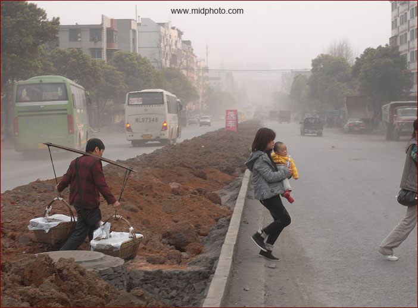
郴州市
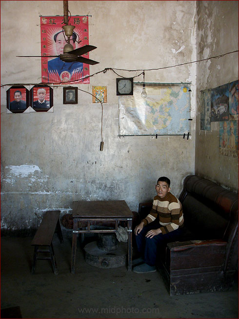
路边人家
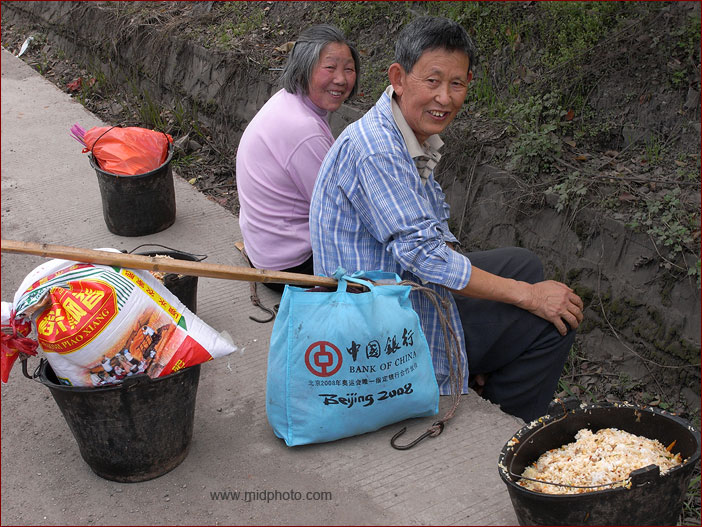
路人甲和路人乙
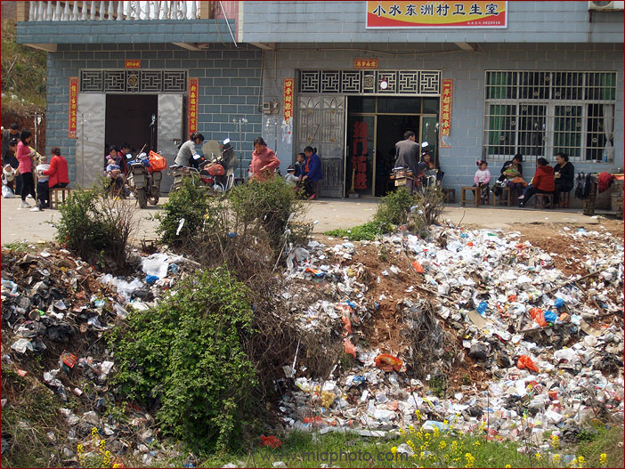
郴州段
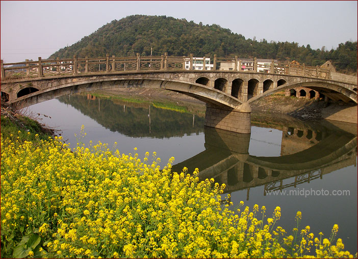
湘潭段
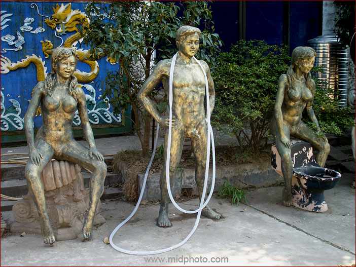
衡山段
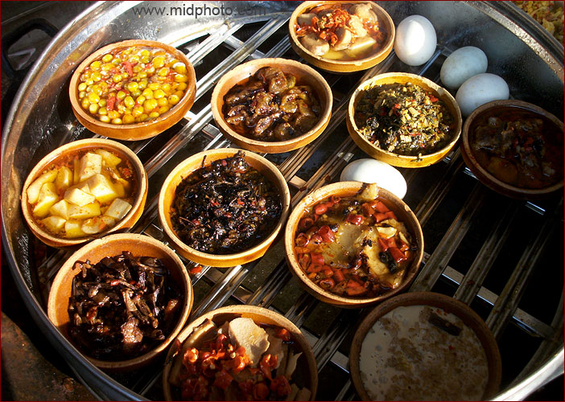
湘潭段
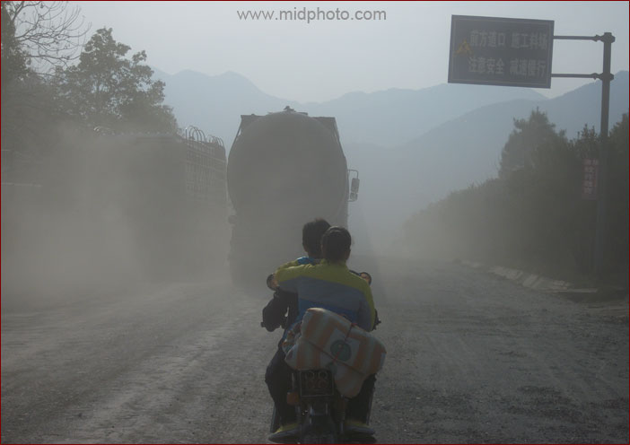
衡山段
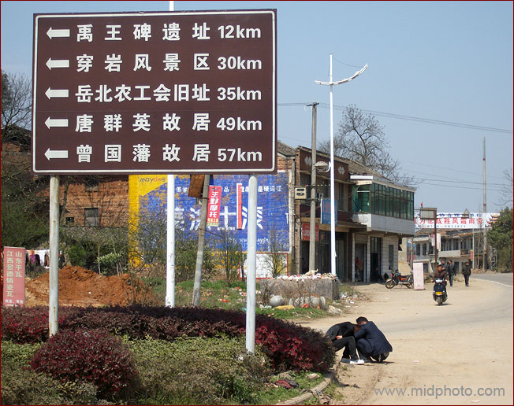
湘潭段
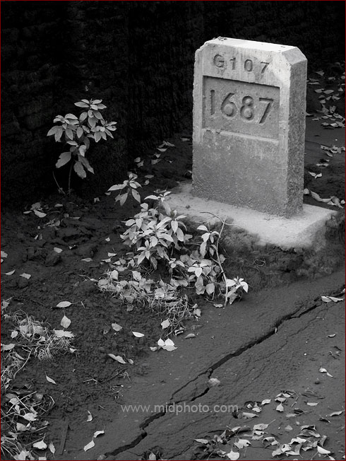
长沙段
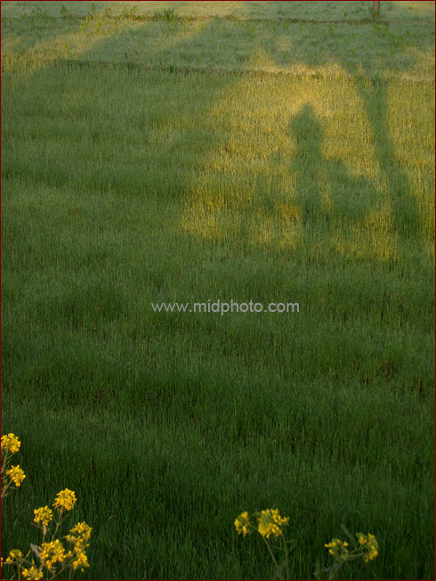
衡阳段
先到这里，107国道北京至长沙段基本情况请点击：
/chinese/documentchina/communication/107nationalroad.htm
|